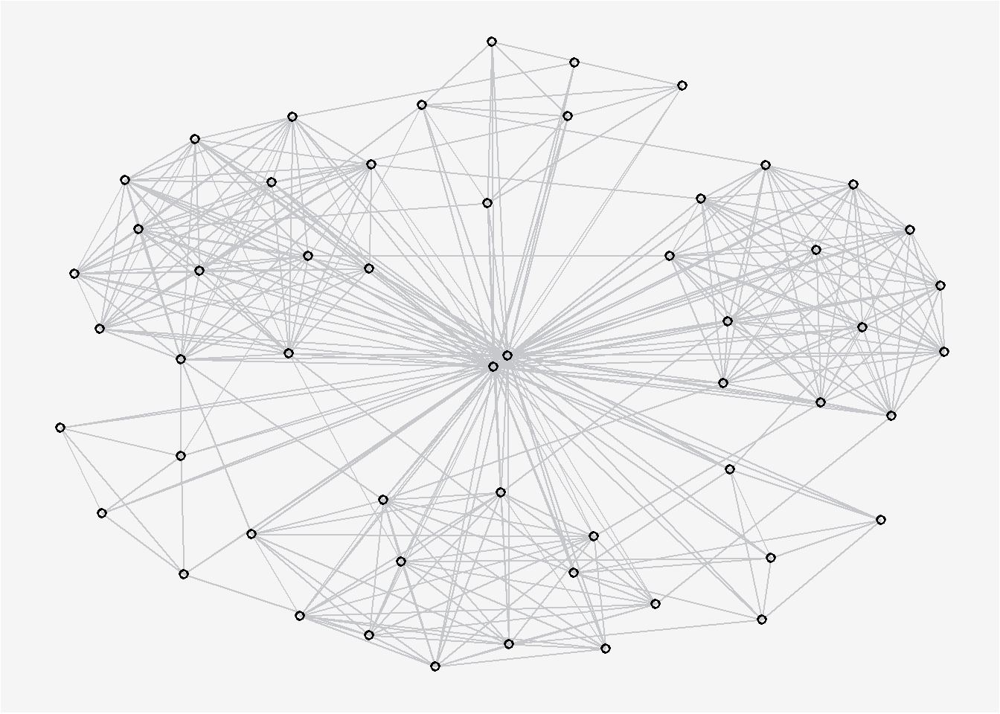
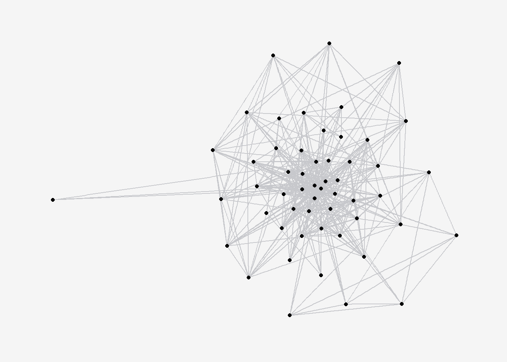
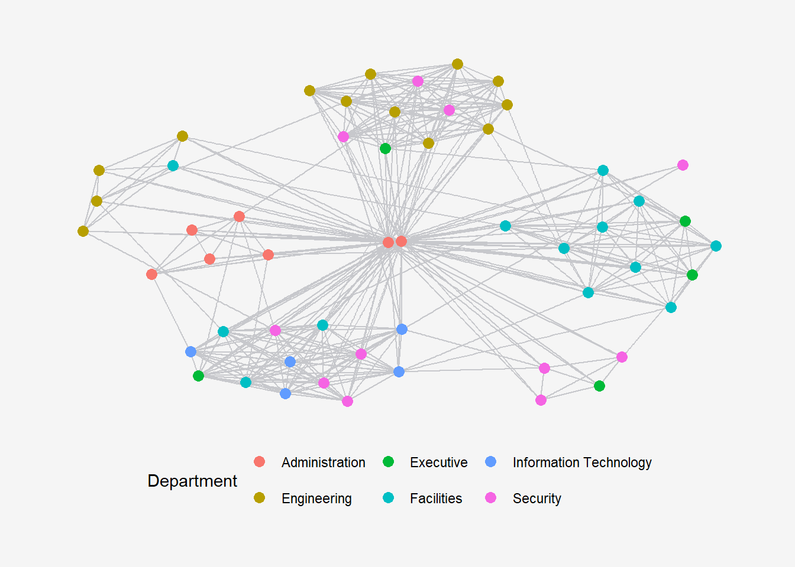
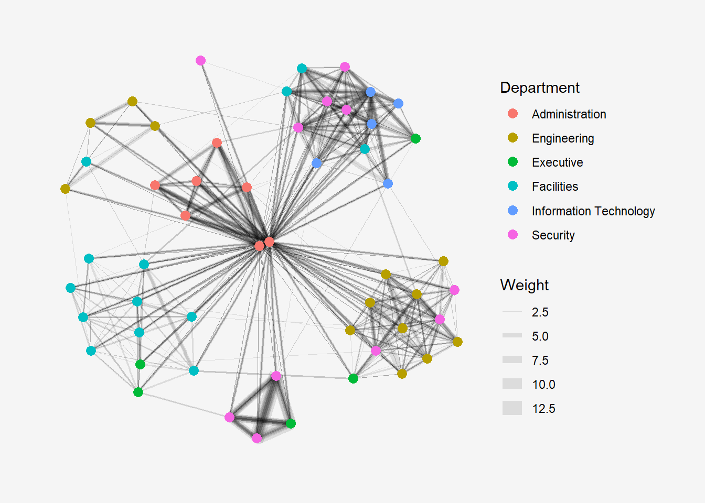
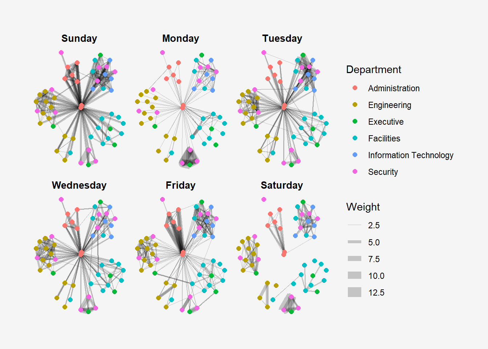

pacman::p_load(tidygraph, ggraph,
visNetwork, lubridate, clock,
tidyverse, graphlayouts,
knitr)In-class Exercise 9: Modelling, Visualising and Analysing Network Data with R
1 Getting Started
- Network data modelling and visualisation packages: igraph, tidygraph, ggraph and visNetwork. igraph is already part of tidygraph.
- Data/time wrangling: tidyverse, clock, lubridate
- Edges data: GAStech-email_edges.csv which consists of two weeks of 9063 emails correspondances between 55 employees.
- Nodes data: GAStech_email_nodes.csv which consist of the names, department and title of the 55 employees.
GAStech_nodes <- read_csv("data/GAStech_email_node.csv")
GAStech_edges <- read_csv("data/GAStech_email_edge-v2.csv")glimpse(GAStech_edges)Rows: 9,063
Columns: 8
$ source <dbl> 43, 43, 44, 44, 44, 44, 44, 44, 44, 44, 44, 44, 26, 26, 26…
$ target <dbl> 41, 40, 51, 52, 53, 45, 44, 46, 48, 49, 47, 54, 27, 28, 29…
$ SentDate <chr> "6/1/2014", "6/1/2014", "6/1/2014", "6/1/2014", "6/1/2014"…
$ SentTime <time> 08:39:00, 08:39:00, 08:58:00, 08:58:00, 08:58:00, 08:58:0…
$ Subject <chr> "GT-SeismicProcessorPro Bug Report", "GT-SeismicProcessorP…
$ MainSubject <chr> "Work related", "Work related", "Work related", "Work rela…
$ sourceLabel <chr> "Sven.Flecha", "Sven.Flecha", "Kanon.Herrero", "Kanon.Herr…
$ targetLabel <chr> "Isak.Baza", "Lucas.Alcazar", "Felix.Resumir", "Hideki.Coc…2 Data Manipulation
2.1 Converting Data Types
SentDate is in character field. dmy() converts this variable into the appropriate date format. wday() helps extracts the day, where label=TRUE and abbr=FALSE provides abbreviated day names.
GAStech_edges <- GAStech_edges %>%
mutate(SendDate = dmy(SentDate)) %>%
mutate(Weekday = wday(SentDate,
label = TRUE,
abbr = FALSE))Checking the changes:
glimpse(GAStech_edges)Rows: 9,063
Columns: 10
$ source <dbl> 43, 43, 44, 44, 44, 44, 44, 44, 44, 44, 44, 44, 26, 26, 26…
$ target <dbl> 41, 40, 51, 52, 53, 45, 44, 46, 48, 49, 47, 54, 27, 28, 29…
$ SentDate <chr> "6/1/2014", "6/1/2014", "6/1/2014", "6/1/2014", "6/1/2014"…
$ SentTime <time> 08:39:00, 08:39:00, 08:58:00, 08:58:00, 08:58:00, 08:58:0…
$ Subject <chr> "GT-SeismicProcessorPro Bug Report", "GT-SeismicProcessorP…
$ MainSubject <chr> "Work related", "Work related", "Work related", "Work rela…
$ sourceLabel <chr> "Sven.Flecha", "Sven.Flecha", "Kanon.Herrero", "Kanon.Herr…
$ targetLabel <chr> "Isak.Baza", "Lucas.Alcazar", "Felix.Resumir", "Hideki.Coc…
$ SendDate <date> 2014-01-06, 2014-01-06, 2014-01-06, 2014-01-06, 2014-01-0…
$ Weekday <ord> Friday, Friday, Friday, Friday, Friday, Friday, Friday, Fr…2.2 Relevant Subset
filter() to select only work-related emails, removes where source = target (ie emailing yourself!), and where frequency of communication is >1.
GAStech_edges_aggregated <- GAStech_edges %>%
filter(MainSubject == "Work related") %>%
group_by(source, target, Weekday) %>%
summarise(Weight = n()) %>%
filter(source!=target) %>%
filter(Weight > 1) %>%
ungroup()3 Preparing Network Data
GAStech_graph<- tbl_graph(nodes=GAStech_nodes,
edges = GAStech_edges_aggregated,
directed = TRUE)Check that the observations and node counts reconcile to the source files.
GAStech_graph# A tbl_graph: 54 nodes and 1372 edges
#
# A directed multigraph with 1 component
#
# Node Data: 54 × 4 (active)
id label Department Title
<dbl> <chr> <chr> <chr>
1 1 Mat.Bramar Administration Assistant to CEO
2 2 Anda.Ribera Administration Assistant to CFO
3 3 Rachel.Pantanal Administration Assistant to CIO
4 4 Linda.Lagos Administration Assistant to COO
5 5 Ruscella.Mies.Haber Administration Assistant to Engineering Group Mana…
6 6 Carla.Forluniau Administration Assistant to IT Group Manager
7 7 Cornelia.Lais Administration Assistant to Security Group Manager
8 44 Kanon.Herrero Security Badging Office
9 45 Varja.Lagos Security Badging Office
10 46 Stenig.Fusil Security Building Control
# ℹ 44 more rows
#
# Edge Data: 1,372 × 4
from to Weekday Weight
<int> <int> <ord> <int>
1 1 2 Sunday 5
2 1 2 Monday 2
3 1 2 Tuesday 3
# ℹ 1,369 more rows4 Visualising Network Data
ggraph(GAStech_graph) + #<<< GAStech_graph is a tbl_graph object
geom_edge_link0(edge_colour = "#c7c8cc", #<< global aesthetics
) +
geom_node_point(shape = 21,
color = "black",
stroke = 1) +
theme(legend.position = "bottom",
legend.background = element_rect(fill="#f5f5f5"),
plot.background = element_rect(fill="#f5f5f5"),
panel.background = element_rect(fill="#f5f5f5"))
g <- ggraph(GAStech_graph,
layout='gem') +
geom_edge_link(edge_colour = "#c7c8cc") +
geom_node_point(aes())
g +
theme_graph() +
theme(legend.position = "none",
legend.background = element_rect(fill="#f5f5f5", color = "#f5f5f5"),
plot.background = element_rect(fill="#f5f5f5", color ="#f5f5f5"),
panel.background = element_rect(fill="#f5f5f5", color ="#f5f5f5"))
g <- ggraph(GAStech_graph,
layout='nicely') +
geom_edge_link(edge_colour = "#c7c8cc") +
geom_node_point(aes(colour=Department),
size =3)
g +
theme_graph() +
theme(legend.position = "bottom",
legend.background = element_rect(fill="#f5f5f5", color = "#f5f5f5"),
plot.background = element_rect(fill="#f5f5f5", color ="#f5f5f5"),
panel.background = element_rect(fill="#f5f5f5", color ="#f5f5f5")) 
scale_edge_width to introduce range of width.
g <- ggraph(GAStech_graph,
layout='nicely') +
geom_edge_link(aes(width=Weight),
alpha= 0.1) + #<< thickness by weight and change alpha
scale_edge_width(range = c(0.1, 5)) + #<< control max size of edge , else my plot is ugly
geom_node_point(aes(colour=Department),
size =3)
g +
theme_graph() +
theme(legend.position = "right",
legend.background = element_rect(fill="#f5f5f5", color = "#f5f5f5"),
plot.background = element_rect(fill="#f5f5f5", color ="#f5f5f5"),
panel.background = element_rect(fill="#f5f5f5", color ="#f5f5f5")) 
set_graph_style() #<< using this command provide plot settings for next few plots
g <- ggraph(GAStech_graph,
layout = "nicely") +
geom_edge_link(aes(width=Weight),
alpha=0.2) +
scale_edge_width(range = c(0.1, 5)) +
geom_node_point(aes(colour = Department),
size = 2)
g +
facet_edges(~Weekday) +
theme(legend.position = "right",
legend.background = element_rect(fill="#f5f5f5", color = "#f5f5f5"),
plot.background = element_rect(fill="#f5f5f5", color ="#f5f5f5"),
panel.background = element_rect(fill="#f5f5f5", color ="#f5f5f5")) 